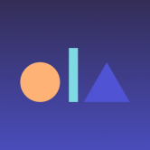

 Ola finance 什么是Ola Finance？ 一个去中心化的协议可编程贷款。 Ola Financial Services Private Limited是一家私人公司，成立于2007年2月24日。它被归类为非政府
Neptune Mutual Neptune Mutual 为您提供有保障的稳定币流动性，通过对冲可能的资本风险和智能合约漏洞来降低您的风险敞口。 Neptune Mutual 平台探索在区块链上创建以用户为中心的对冲产品的
Doggy Day Care Dogs、Doggos、good bois 和女孩……狗模因令牌季节如火如荼，我们随时为您提供帮助！ Doggy Day Care Finance 很自豪地为您珍贵的毛茸茸的朋友们提供我们的
DogX DeFi DogX DeFi 在币安智能链（BSC）上提供四种产品： DogX Swap & Liquidity：是我们易于使用的交换协议，其设计灵感来自著名的基于 AMM 的交换协议，例如 Pancake S
DokiDoki Finance 我们的合约代码不是 sushi/yfi/curve 的一个分支。所有合约都是从头开始开发的。 我们的网站和产品视觉设计也是独一无二的——仅为 Doki Doki Finance 创建，而不是从其他来源抄袭。
Doll.Finance DollSwap 从 PancakeSwap 和 Yield Farming 分叉，运行在币安智能链上的 Staking 平台。 DollSwap 由 DeFi Dolls 为 DeFi Dolls 构建。我们拥有一支由经验丰富的 Dolls 组成的专门团队，他们已经在加密领域工作了多年。 $DOLL
Dollarswap Dollarfuture 是一个跨链去中心化平台，提供去中心化交易所（Dex）、农业和流动性功能。 Dollarfuture Dex 允许用户根据提供的流动性以几乎零费用将一种代币换成另一种代币。
Dolomite Defi Dolomite Defi 是使用自动做市商 (AMM) 技术的去中心化交易所 (DEX)。该项目是 Goose Finance 的一个分支，目标是有机地成为币安智能链 (BSC) 上最有价值、最具吸引力和面向社区的
Donut Farm DonutFarm.Finance 是币安智能链 (BSC) 上奖励最高的分层收益农业自动复利项目，为 DONUT 代币的持有者和用户提供收益聚合。为了促进收益农业和复利过程的自动化，DonutFa
Dos Esposas Restaurante Dos Esposas Restaurante 只采购和使用最优质、最新鲜和最优质的食材。因为它们是最好的，所以它们保持价值并做出美味佳肴。 Dos Esposas 为 DeFi 带来了一种新方法，允许人们以独特的
Doveswap Finance DoveSwap Finance 是具有通缩治理令牌模型的下一代自动做市 (AMM) 去中心化交易所。我们是您在币安智能链和 Pancakeswap 交易所上运行的首选收益农场，还有许多其他功能可以让您赚取
Draco Cave Draco Cave 是 Fantom 网络上的一个新的稳定 DeFi 代币，它帮助投资者保护他们的资金，因为我们提供一个透明的环境，让用户可以无忧地使用我们的服务，并有助于通过 Staking 带
Draco Force Draco Force 的最高价格是多少？Draco Force 在 N/A 上创下历史新高。 Draco Force 的最低价格是多少？Draco Force 的 N/A 处于历史最低点。 Draco Force 24 小时的交易量是多少？Dra
Draco.Finance Fantom Opera 上最好的算法稳定币之一，通过铸币税与 1 FTM 的价格挂钩。墓叉。 放弃所有权。Fantom Opera 上最好的算法稳定币之一，通过铸币税与 1 FTM 的价格挂钩。
DragonBall Finance DragonBallFinance 是币安智能链网络上第一个完全去中心化、自给自足的一体化 defi 平台，在当前无聊的美食名称 defi 世界中带来了龙珠主题。 DragonBallFinance 将实施多种产品和机制，即使从长
DragonBallSwap DragonBallSwap 是币安智能链上最新一代的收益农场和 AMM。该项目使用独特的机制，例如：自动燃烧机制、自动流动性、反鲸鱼、丰收锁定等。 我们的愿景是成为领先的
DrakeSwap DrakeSwap 是币安智能链（BSC）上的去中心化 AMM（自动做市商）协议。 DUCK & SWAN 代币是平台的原生 BEP-20 治理代币。用户可以通过在 DrakeSwap 上提供流动性来赚取 DUCK 代币，质
DRC Vault DRC Vault 是专为 DRC 持有者创建的安全非托管和 100% 去中心化应用程序。在 DRC Vault 中持有的 DRC 代币完全由用户控制和拥有，其他任何人都无法访问这些资金。 DRC Vault 具有直观
DreamCatcher Finance 捕梦网 被称为 GameFi，游戏金融现在像 AXS Infinity 一样成为 DeFi 世界的新趋势。 同时成为加密货币持有者、投资者和玩家真是太棒了。 随着 gamefi 的成长，Dream
Dripping Finance 与 RFI 克隆或具有疯狂 APY 的农业项目不同，Dropping Finance 分红系统是为长期可持续性而建立的，奖励太容易发放，导致项目价值在一周内消失。我们做事不
Firebird Finance Swap, Save, Earn. Only with Firebird. 探索火鸟金融，这是币安智能链 (BSC) 上领先的 DEX，拥有 DeFi 中最好的农场和 FBF 彩票。 它比 DEX 更好。行业领先的多链超级聚合器，为您提供最优惠的


 上领先的 DEX，拥有 DeFi 中最好的农场和 FBF 彩票。")